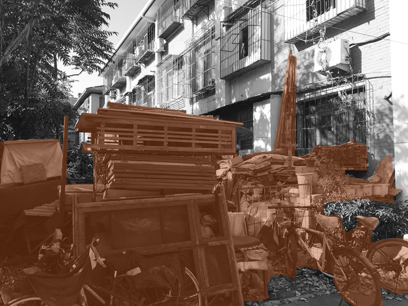
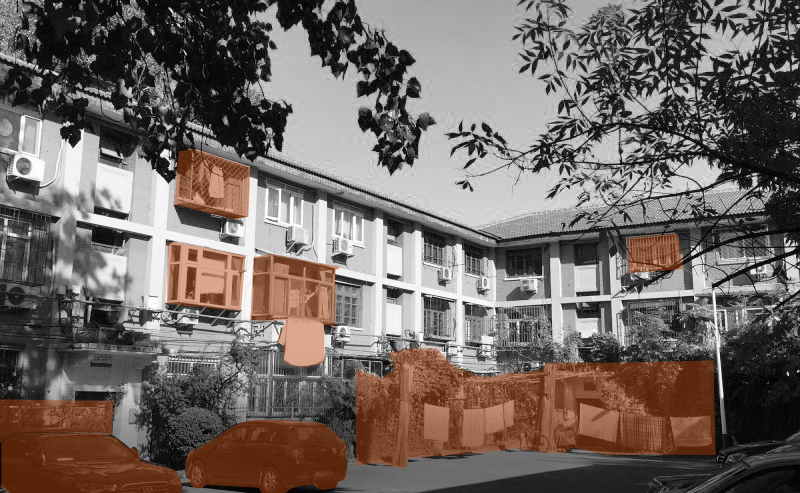

The shared future starts with us being sustainable with the limited resources and spaces that we have now! Join the UHAVE events to start learning about what we are doing to promote a more connected and clean community.
The waste that could be used
More than 80% of the waste dumps that are currently scattered around corners of the community consist of reusable furniture, abandoned wood and steel panels from the apartment refurnishing process happening within many units. However, while the interior of the apartment might be transformed to better fit the current need and bring a more comfortable living space for individual families, the overall environment of the community, is baring the negative externalities of having the limited public spaces become unhygienic dump heaps that could have been playgrounds for the children, relaxing green space for the public.


Partnering with the local construction firm, we now have the option to turn this waste into public utilities that would become added welfare for the general public. Residents or the drones would upload unused objects onto the UHAVE digital platform for recycling or exchanging. The construction team will collect these materials and recycle any paper, wood or steel materials by compression to become construction materials again. The community will have all the wood elements and the construction firm will take the steel materials in return for their effort. The regenerated wood panels would become components that the community could use as a whole to build infrastructure or facilities such as benches, playgrounds or sheds. These infrastructures are temporary and could be moved or reorganized to become other elements based on the needs of individuals.